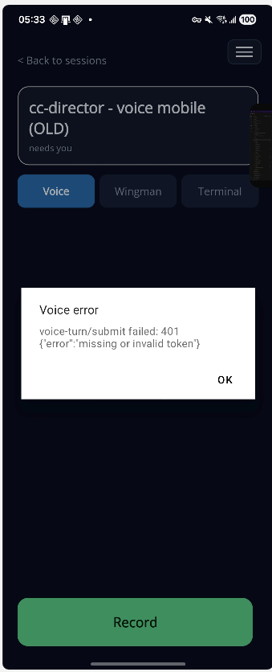
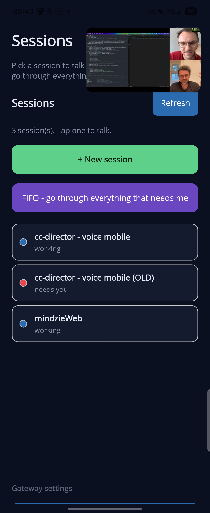
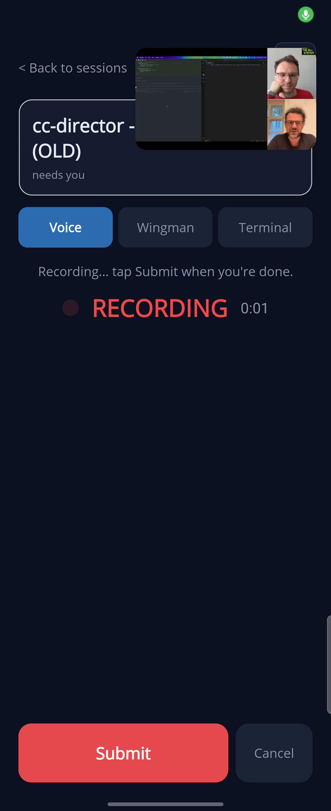
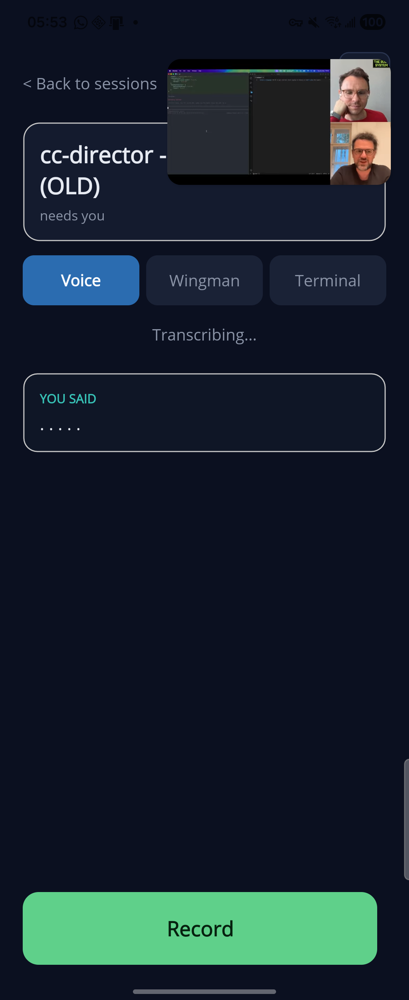
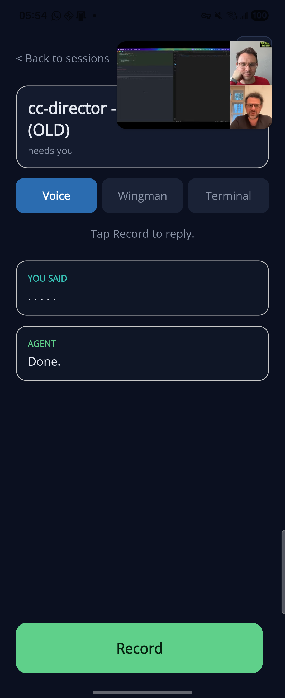
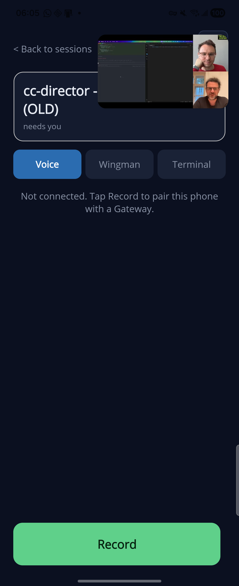
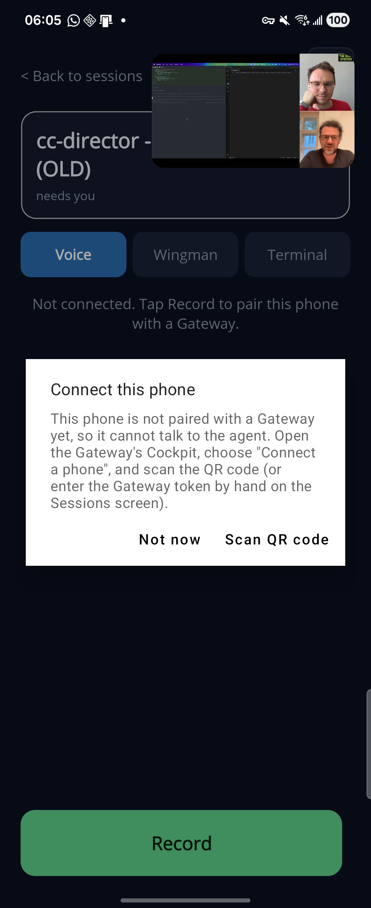

On the Voice tab, recording a turn produced a white "Voice error" dialog: voice-turn/submit failed: 401 {"error":"missing or invalid token"}. Gateway log confirmed the rejection of the phone's requests:
2026-06-13 05:31:58 [GatewayVoiceTurn] POST /sessions/bc3a6aa1.../voice-turn/submit from 100.86.144.11 2026-06-13 05:31:58 [GatewayVoiceTurn] submit sid=bc3a6aa1...: missing or invalid token from 100.86.144.11 -> 401 2026-06-13 05:33:03 [GatewayVoiceTurn] submit sid=bc3a6aa1...: missing or invalid token from 100.86.144.11 -> 401
The phone's stored Gateway credentials were half-configured: the URL was set but the token was empty. The phone sent no Authorization: Bearer header, so the Gateway's voice-turn auth gate (added in issue #369/#384) correctly rejected it with 401. Dump of the device's saved preferences:
<map>
<string name="gateway_url">https://soren-north.taildb08ed.ts.net</string>
<string name="gateway_token"></string> <!-- EMPTY: never paired -->
</map>
This is a runtime unpaired state, not a code defect: before #384 the voice-turn endpoints required no token, so an unpaired phone still worked. After #384 the token is mandatory, and the only supported ways to supply it are the QR pairing flow (issue #386) or the manual token field. The pairing/auth code itself is correct.
Submitting to a throwaway GUID isolates the auth check from session processing. The flow is token-check -> GUID-parse -> resolve-owner, so a 404 (not 401) means the token was accepted.
| Request | Result | Meaning |
|---|---|---|
| No Authorization header | 401 missing or invalid token | Reproduces the bug |
| Correct Bearer token | 404 session not found | Token ACCEPTED (404 only because GUID is fake) |
| Wrong Bearer token | 401 missing or invalid token | Auth correctly rejects |
Driving the actual app: opened the session, Voice tab, tapped Record, then Submit. The Gateway accepted the phone's request (HTTP 202) and the turn ran to a terminal reply stage:
2026-06-13 05:53:07 [GatewayVoiceTurn] POST /sessions/bc3a6aa1.../voice-turn/submit from 100.86.144.11 2026-06-13 05:53:07 [GatewayVoiceTurn] submit sid=bc3a6aa1...: accepted turnId=35329d98-..., director=https://soren-north...:7883 2026-06-13 05:53:07 [GatewayVoiceTurn] RunTurnAsync: turnId=35329d98-... (processing started) poll -> stage=reply transcript='. . . . .' summary='Done.'
The 401 is gone; the phone now authenticates and the async submit/poll pipeline returns a real agent reply. (The transcript shows only dots because the QA clip was ~1s of silence — the agent cannot speak into the phone. With real speech, "YOU SAID" shows the spoken words.)





When gateway_token is empty, the Voice tab now detects the unpaired state before recording, so a turn can no longer fail with a raw 401 missing or invalid token after the user has spoken. Changes in TalkPage.xaml.cs:


Verified live on device: built and fast-deployed, phone set to an empty token, both states confirmed, then re-paired. The token-restored phone still completes full voice turns (sections 4–5).